Aufträge, Stunden, Berichte
Ein Tipp im Traktor: Hektaro zeichnet die Spur auf, rechnet Hektar mit der Arbeitsbreite und macht daraus den Leistungsnachweis für deinen Kunden. Ohne Konto.
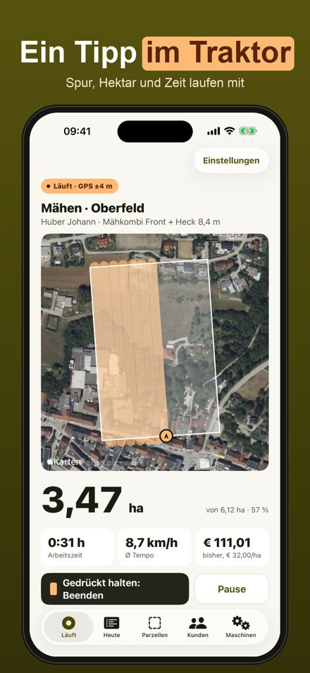
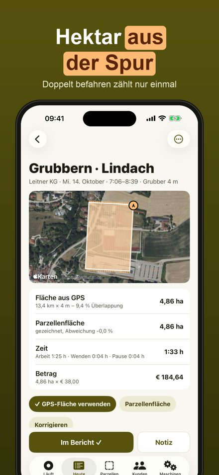
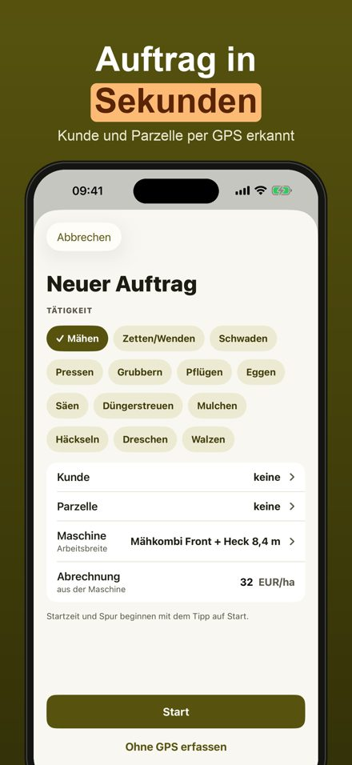
Hektaro ist das Auftragsbuch für Lohnunternehmer und Landwirte, die für andere fahren. Du tippst im Traktor auf Start, Hektaro erkennt Parzelle und Kunde und zeichnet die Spur auf. Aus Spur und Arbeitsbreite wird die bearbeitete Fläche, doppelt befahrene Streifen zählen nur einmal. Die Zeit wird in Arbeit, Wenden und Pause aufgeteilt. Am Abend hast du je Kunde Hektar, Stunden und Betrag und schickst den Leistungsnachweis als PDF.
Ohne Abo: 1 Maschine, 10 Aufträge im Monat, Spur und Hektar. Hektaro Plus ist ein Monats- oder Jahresabo (Testzeitraum beim Jahresabo): unbegrenzt Aufträge und Maschinen, Kunden, Parzellen, Berichte als PDF und CSV, Tageszettel und Saisonliste zum Teilen. Verlängert sich automatisch, jederzeit in den Apple-ID-Einstellungen kündbar. Keine Werbung, kein Konto.
Hektaro ist ein unabhängiges Werkzeug ohne Verbindung zu Verbänden, Maschinenherstellern oder Behörden. Die GPS-Fläche ist eine Schätzung und ersetzt keine amtliche Flächenangabe. Für Rechnungen und Steuern bleibst du verantwortlich.
Klussen, uren en rapporten
Eén tik in de trekker: Hektaro legt het spoor vast, rekent hectares met de werkbreedte en maakt er de werkbon voor je klant van. Zonder account.
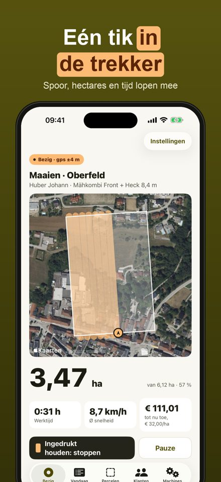
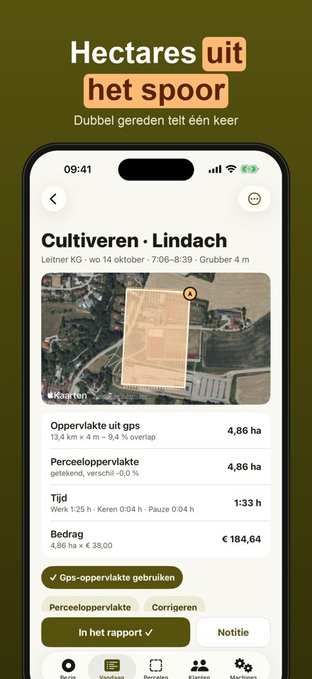
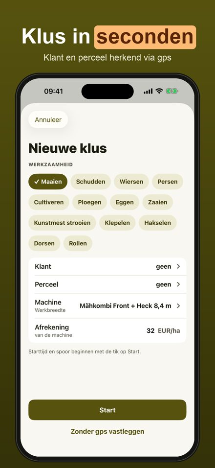
Hektaro is het klussenboek voor loonwerkers en boeren die voor anderen rijden. Je tikt in de trekker op Start, Hektaro herkent perceel en klant en legt het spoor vast. Uit spoor en werkbreedte volgt de bewerkte oppervlakte; dubbel gereden stroken tellen één keer. De tijd wordt verdeeld in werk, kopakker en pauze. ’s Avonds heb je per klant hectares, uren en bedrag en stuur je de werkbon als pdf.
Zonder abonnement: 1 machine, 10 klussen per maand, spoor en hectares. Hektaro Plus is een maand- of jaarabonnement (proefperiode bij jaar): onbeperkt klussen en machines, klanten, percelen, rapporten als pdf en csv, dagstaat en seizoenslijst om te delen. Verlengt automatisch, opzeggen kan altijd in de Apple ID-instellingen. Geen reclame, geen account.
Hektaro is een onafhankelijke tool zonder band met brancheverenigingen, machinefabrikanten of overheden. De gps-oppervlakte is een schatting en vervangt geen opgave voor de overheid. Je blijft zelf verantwoordelijk voor facturen en belasting.
Chantiers, hectares et heures
Un geste dans le tracteur : Hektaro enregistre la trace, calcule les hectares avec la largeur de travail et en fait l’attestation pour ton client. Sans compte.
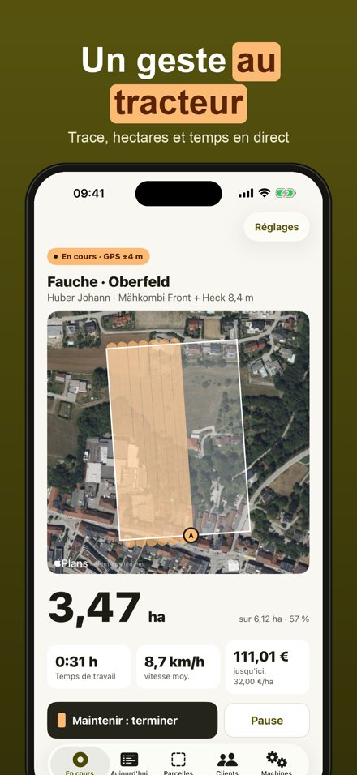
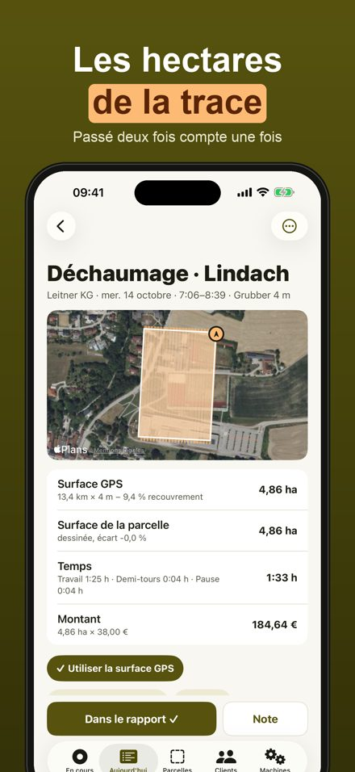
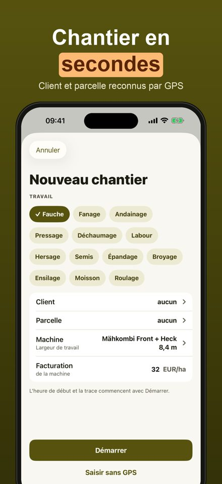
Hektaro est le carnet de chantiers des entrepreneurs de travaux agricoles et des agriculteurs qui travaillent pour d’autres. Tu touches Démarrer dans le tracteur, Hektaro reconnaît la parcelle et le client et enregistre la trace. La trace et la largeur de travail donnent la surface travaillée ; les bandes passées deux fois comptent une seule fois. Le temps est séparé en travail, demi-tours et pause. Le soir, tu as par client les hectares, les heures et le montant, et tu envoies l’attestation en PDF.
Sans abonnement : 1 machine, 10 chantiers par mois, trace et hectares. Hektaro Plus est un abonnement mensuel ou annuel (essai sur l’annuel) : chantiers et machines illimités, clients, parcelles, rapports PDF et CSV, fiche du jour et liste de saison à partager. Renouvellement automatique, résiliable à tout moment dans les réglages de l’identifiant Apple. Sans publicité, sans compte.
Hektaro est un outil indépendant, sans lien avec des fédérations, des constructeurs ou des administrations. La surface GPS est une estimation et ne remplace aucune déclaration de surface. Tu restes responsable des factures et des taxes.
Zlecenia, hektary, godziny
Jedno dotknięcie w ciągniku: Hektaro zapisuje ślad, liczy hektary z szerokością roboczą i tworzy z tego raport dla klienta. Bez konta.
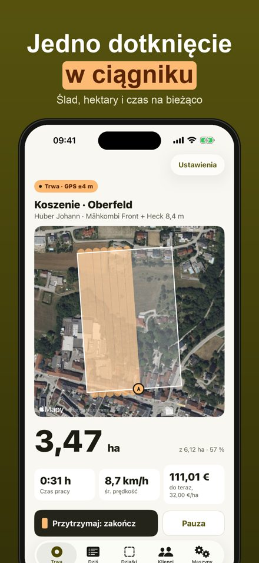
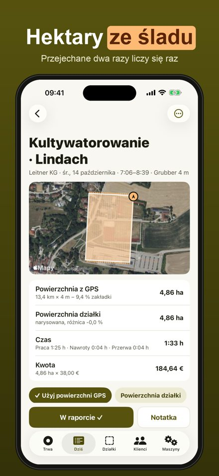
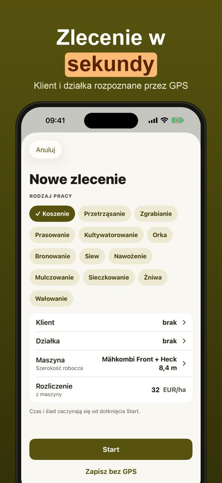
Hektaro to dziennik zleceń dla firm usług rolniczych i rolników, którzy pracują dla innych. Dotykasz Start w ciągniku, Hektaro rozpoznaje działkę i klienta i zapisuje ślad. Ze śladu i szerokości roboczej wychodzi obrobiona powierzchnia; pasy przejechane dwa razy liczą się raz. Czas dzieli się na pracę, uwrocia i przerwę. Wieczorem masz dla każdego klienta hektary, godziny i kwotę i wysyłasz raport jako PDF.
Bez subskrypcji: 1 maszyna, 10 zleceń w miesiącu, ślad i hektary. Hektaro Plus to subskrypcja miesięczna lub roczna (z okresem próbnym przy rocznej): bez limitu zleceń i maszyn, klienci, działki, raporty PDF i CSV, karta dnia i lista sezonu do udostępnienia. Odnawia się automatycznie, anulujesz w ustawieniach Apple ID. Bez reklam i konta.
Hektaro to niezależne narzędzie, niezwiązane ze związkami, producentami maszyn ani urzędami. Powierzchnia z GPS jest szacunkiem i nie zastępuje deklaracji powierzchni. Za faktury i podatki odpowiadasz sam.
Lavori, ettari, ore e report
Un tocco sul trattore: Hektaro registra la traccia, calcola gli ettari con la larghezza di lavoro e prepara il rapportino per il cliente. Senza account.
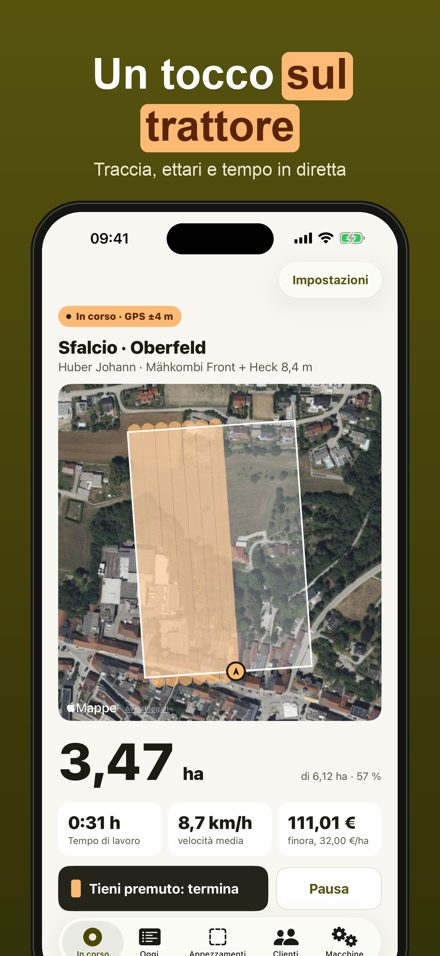
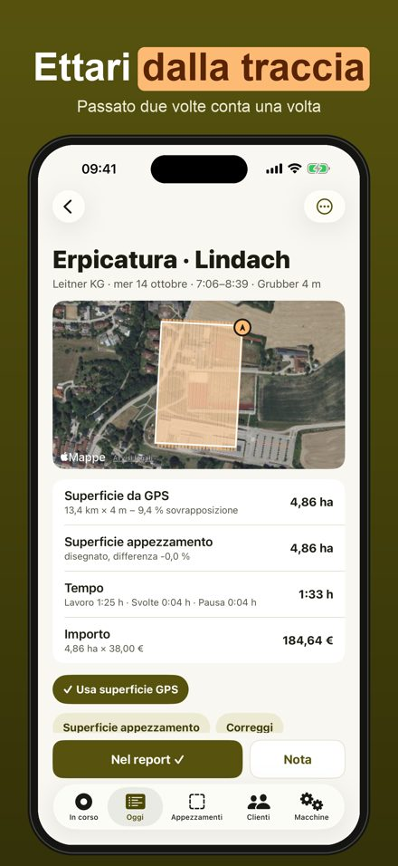
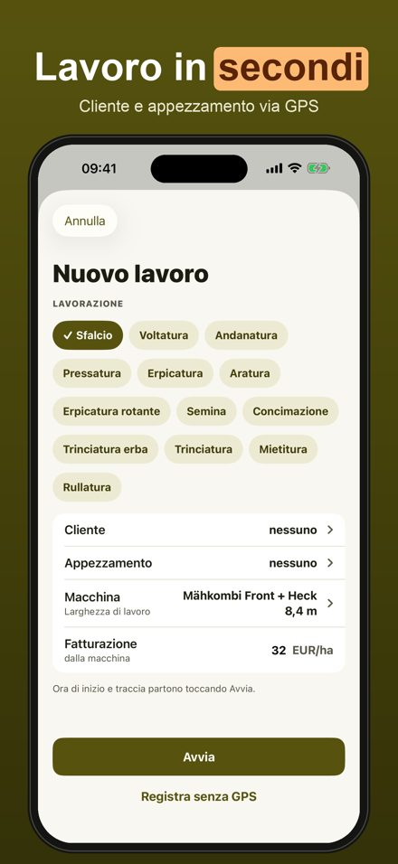
Hektaro è il registro lavori per contoterzisti e agricoltori che lavorano per altri. Tocchi Avvia sul trattore, Hektaro riconosce appezzamento e cliente e registra la traccia. Da traccia e larghezza di lavoro esce la superficie lavorata; le strisce passate due volte contano una volta sola. Il tempo è diviso in lavoro, capezzagne e pausa. La sera hai per ogni cliente ettari, ore e importo e invii il rapportino in PDF.
Senza abbonamento: 1 macchina, 10 lavori al mese, traccia ed ettari. Hektaro Plus è un abbonamento mensile o annuale (con prova sull’annuale): lavori e macchine illimitati, clienti, appezzamenti, report PDF e CSV, foglio giornaliero e lista stagione da condividere. Rinnovo automatico, disdici quando vuoi nelle impostazioni dell’ID Apple. Nessuna pubblicità, nessun account.
Hektaro è uno strumento indipendente, senza legami con associazioni, costruttori di macchine o enti pubblici. La superficie GPS è una stima e non sostituisce dichiarazioni di superficie. La responsabilità di fatture e imposte resta tua.
Opgaver, hektar og timer
Ét tryk i traktoren: Hektaro gemmer sporet, regner hektar med arbejdsbredden og laver arbejdssedlen til din kunde. Uden konto.
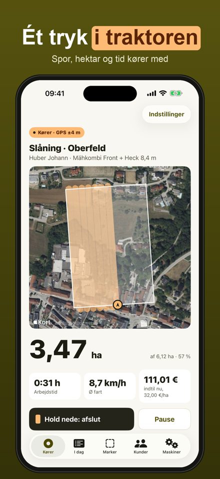
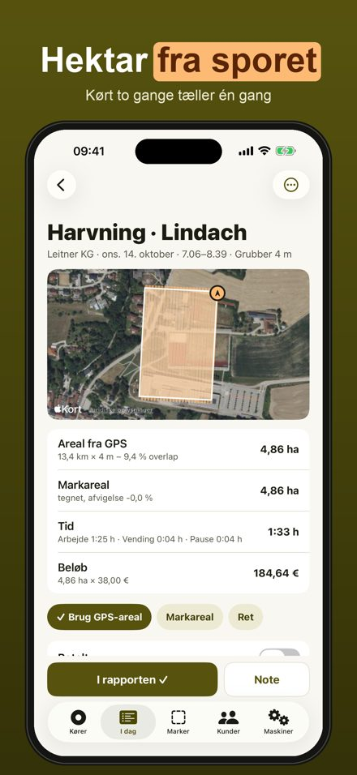
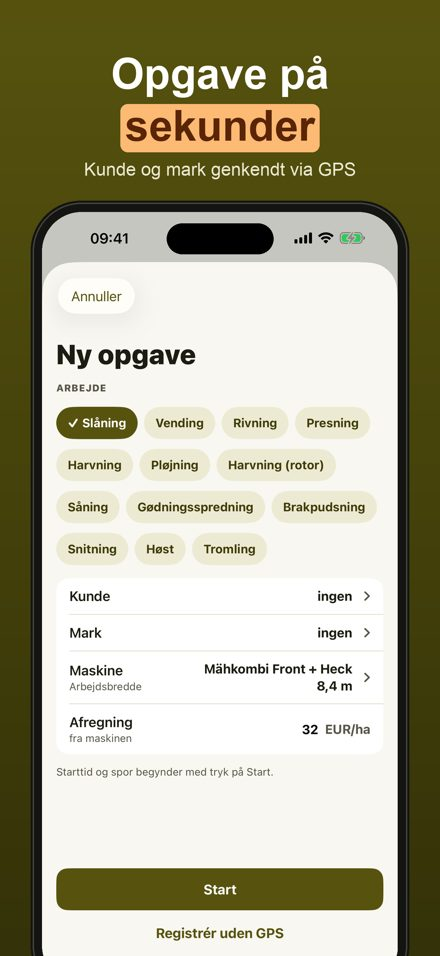
Hektaro er opgavebogen for maskinstationer og landmænd, der kører for andre. Du trykker Start i traktoren, Hektaro genkender marken og kunden og gemmer sporet. Spor og arbejdsbredde giver det bearbejdede areal; striber kørt to gange tæller én gang. Tiden deles i arbejde, forager og pause. Om aftenen har du hektar, timer og beløb pr. kunde og sender arbejdssedlen som pdf.
Uden abonnement: 1 maskine, 10 opgaver om måneden, spor og hektar. Hektaro Plus er et måneds- eller årsabonnement (prøveperiode på årligt): ubegrænset opgaver og maskiner, kunder, marker, rapporter som pdf og csv, dagseddel og sæsonliste til deling. Fornyes automatisk, opsig når som helst i indstillingerne for Apple-id. Ingen reklamer, ingen konto.
Hektaro er et uafhængigt værktøj uden tilknytning til foreninger, maskinproducenter eller myndigheder. Gps-arealet er et skøn og erstatter ikke arealoplysninger til myndigheder. Du har selv ansvaret for fakturaer og moms.
Jobs, hectares, hours, reports
One tap in the cab: Hektaro records the track, works out hectares from your working width and turns it into the work report for your customer. No account.
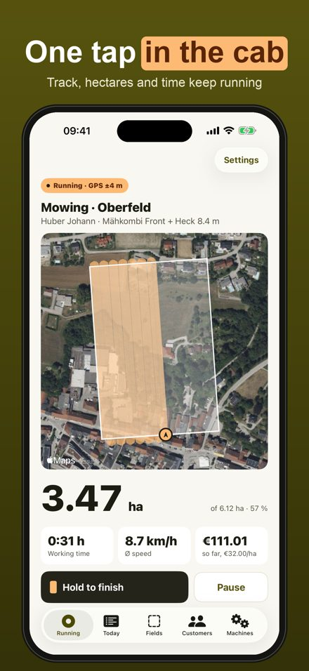
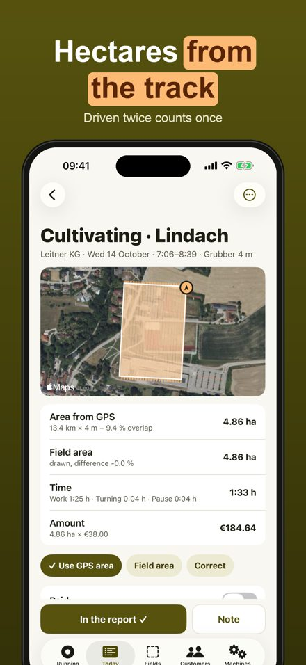
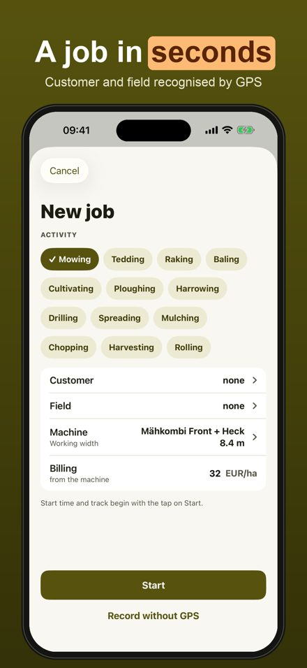
Hektaro is the job log for agricultural contractors and farmers who work for others. Tap Start in the tractor, Hektaro recognises the field and the customer and records the track. Track and working width give the worked area; strips driven twice count once. Time is split into work, headland turns and pauses. In the evening you have hectares, hours and amount per customer and send the work report as a PDF.
Without a subscription: 1 machine, 10 jobs a month, track and hectares. Hektaro Plus is a monthly or yearly subscription (trial on yearly): unlimited jobs and machines, customers, fields, PDF and CSV reports, day sheet and season list to share. Renews automatically; cancel anytime in your Apple ID settings. No ads, no account.
Hektaro is an independent tool, not affiliated with associations, machinery makers or authorities. The GPS area is an estimate and does not replace any area declaration. You remain responsible for invoices and taxes.